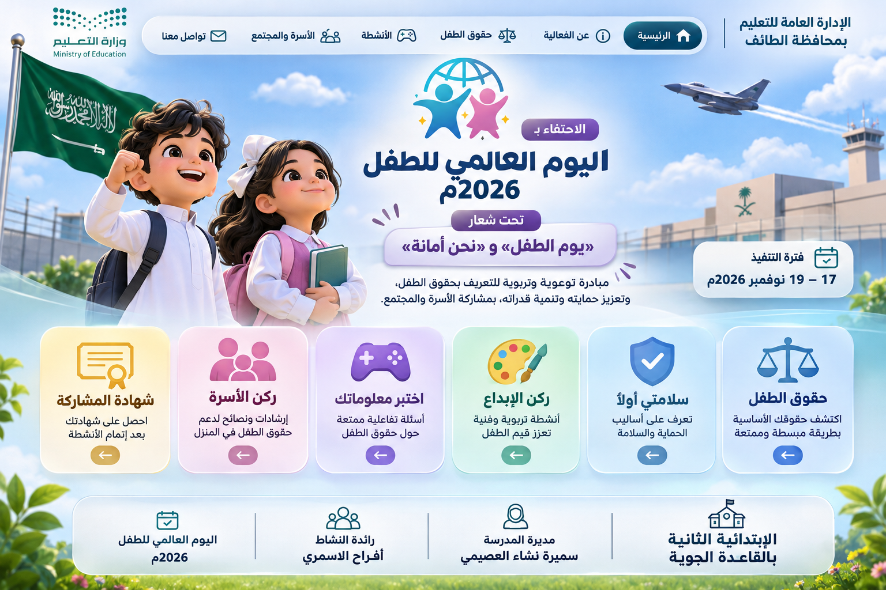

أقول «لا» للموقف الذي يزعجني إذا استطعت.
١٧ — ١٩ نوفمبر ٢٠٢٦طفولتك أمانة.
طفولتك أمانة.
وصوتك له مكان.
نحتفي باليوم العالمي للطفل ٢٠٢٦ تحت شعار «يوم الطفل» و«نحن أمانة». تعلّمي، العبي، وعبّري عن عالمك.
ابدئي رحلة الاكتشاف ←مديرة المدرسة: سميرة نشاء العصيمي
رائدة النشاط: افراح الاسمري

حقوق صغيرة في كلماتها، كبيرة في أثرها
اضغطي على كل بطاقة لتكتشفي كيف نعيش هذا الحق كل يوم.
📚 أتعلّم
أجد من يساعدني على التعلم، وأسأل عندما لا أفهم. اختلاف طريقة تعلّمي لا يقلل من قدراتي.
🛡️ أشعر بالأمان
أستحق المعاملة باحترام، وأخبر شخصًا بالغًا موثوقًا عندما أخاف أو أتأذى.
🎨 ألعب وأبدع
أحتاج وقتًا للعب والراحة وممارسة هواياتي، مع احترام الآخرين.
💬 أعبّر عن رأيي
أشارك أفكاري ومشاعري باحترام، وأستمع إلى آراء زميلاتي.
🌿 أنمو باهتمام
أحتاج الرعاية والغذاء المناسب والنوم والاهتمام بصحتي.
🤝 أنتمي وأشارك
لكل طفلة مكان في المجموعة؛ نرحب باختلافاتنا ونتعاون.
عندما أشعر بعدم الارتياح…
أتوجه إلى مكان آمن قريب من بالغ موثوق.
أتحدث مع أسرتي أو معلمتي، وأطلب المساعدة حتى أجد من يستمع لي.
على الإنترنت: لا أشارك اسمي الكامل أو عنواني أو صوري مع الغرباء، وأطلب مساعدة أسرتي عند ظهور رسالة مزعجة.
ماذا تختارين؟
ارسمي عالمًا يسعد الأطفال
ما الشيء الذي يجعل مدرستك مكانًا أجمل؟ ارسميه أو اكتبيه وشاركي فكرتك مع معلمتك.
عشر دقائق تصنع مساحة للحوار
اسمعوا قبل النصيحة
اسألوا: ما أسعدك اليوم؟ وهل حدث ما أزعجك؟ امنحوا الطفلة وقتًا لتجيب دون مقاطعة.
شاركوا نشاطًا
اقرؤوا قصة معًا، أو ارسموا مكانًا آمنًا، أو اختاروا لعبة تعاونية.
شجّعوا طلب المساعدة
حددوا مع الطفلة أشخاصًا موثوقين يمكنها اللجوء إليهم، وأكدوا أن الإخبار عن الأذى يستحق الدعم.
شهادة مشاركتك
تُتاح بعد إكمال الاختبار. هذه شهادة نشاط يصدرها الموقع، ولا تتضمن توقيعًا رسميًا.
الابتدائية الثانية بالقاعدة الجوية
شهادة مشاركة
نحتفي بمشاركة
في النشاط الرقمي لليوم العالمي للطفل ٢٠٢٦
«يوم الطفل» — «نحن أمانة»
مديرة المدرسة: سميرة نشاء العصيمي
رائدة النشاط: افراح الاسمري
كيف كانت رحلتك؟
تقييم دون أسماء. يُحفظ على هذا المتصفح فقط، ولا يُرسل إلى المدرسة. اسم الشهادة لا يُحفظ.
أدوات المنسقة والتقرير المحلي
الأرقام أدناه تخص هذا المتصفح؛ قد تشمل مشاركة الشخص نفسه أكثر من مرة. اجمعي بيانات الأجهزة وراجعيها قبل إعداد التقرير الرسمي.
يُرفع التقرير النهائي عبر القناة المحددة في التعميم بعد إضافة أعداد المستفيدات الفعلية وشواهد التنفيذ.